Зелдрис
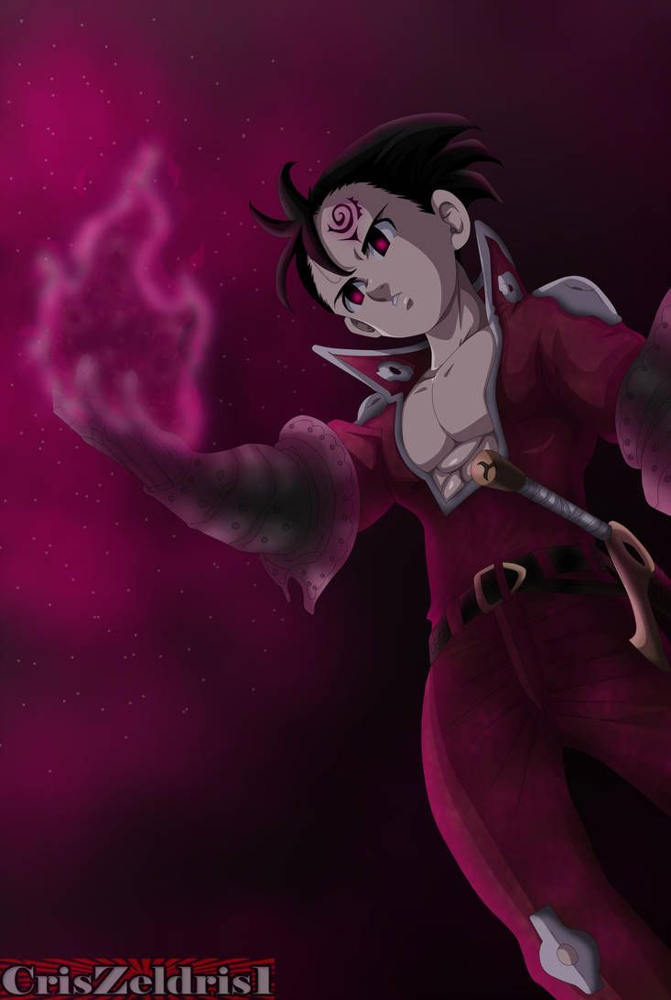Зелдрис「ゼルドリス Zerudorisu」 — элитный боец клана демонов, выступающий непосредственно под личным контролем Короля Демонов в качестве одного из членов Десяти Заповедей. Его заповедь была Благочестие. На данный момент отдал её Мелиодасу.
Зелдрис — парень, весьма напоминающий Мелиодаса. Волосы его зачесаны противоположно Мелиодаса (вверх, а у Мелиодаса вниз). Оба невысоки ростом, имеют одинаковые демонические метки, но метка Зелдриса размещена над левым глазом, а Мелиодаса — правым.
Фандом страница Зелдриса здесь
Эстаросса
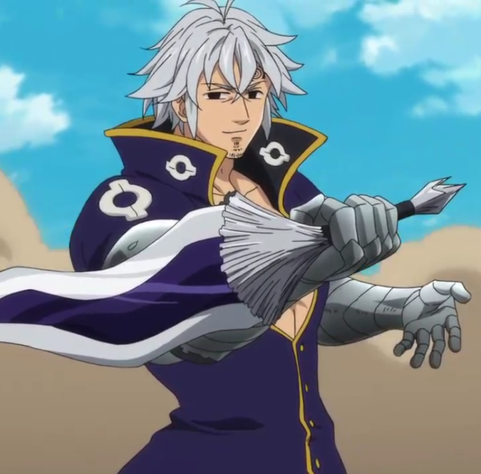Эстаросса「エスタロッサ Esutarossa」 – элитный воин Клана Демонов, подчиняется непосредственно Королю Демонов, член Десяти Заповедей. На самом деле Эстароссы никогда не существовало. Из-за запретного заклинания Гаутера, которое тот использовал, чтобы остановить Священную Войну, все начали считать Маэля Эстароссой. Это заклинание полностью переписало воспоминания о Маэле всех, в том числе и Божеств.
Он имеет много сходства с розыскным плакатом Мелиодаса. Эстаросса - высокий мускулистый мужчина. Он носит коричневое длинное пальто, золотые наручи и золотые поножи. У него серебряные волосы и едва заметная щетина. Он также имеет привычку щуриться. Демоническая метка расположена на лбу, как и у его братьев, Мелиодаса и Зелдриса, но с левой стороны.
Фандом страница Эстароссы здесь
Фраудрин
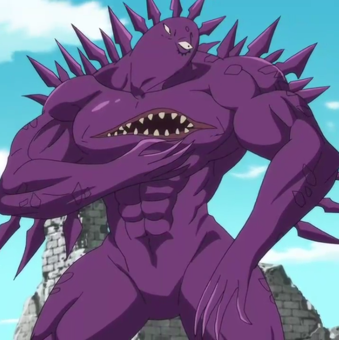Фраудрин「フラウドリン Furaudorin」 - элитный воин Клана Демонов, подчиняющейся непосредственно Королю Демонов. Является членом Десяти Заповедей, временной заменой Гаутера.
Фраудрин по своей натуре манипулятор, который любит играться с чувствами других. Он очень терпелив. Ждать годы до начала плана отмщения Мелиодасу и возрождении Клана Демонов может не каждый. Он пользовался телом Дрейфуса на протяжении многих лет и беспокоился, что, нахождение внутри человека, сделало его мягче.
Фандом страница Фраудрина здесь
Мерасцилла
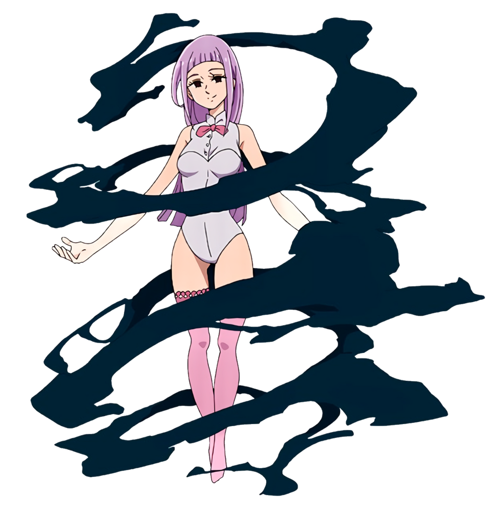Мерасцилла「メラスキュラ Merasukyura」- Демон, участница Десяти Заповедей и бывшая носительница Заповеди Веры.
Мерасцилла - маленькая змейка с большими глазами и светлой чешуёй, на которой идёт ряд точек более тёмного оттенка. После поглощения скверны Царства Демонов в течение 300 лет она выроста в гигантскую кобру и научилась принимать человеческую форму, в которой становится стройной, невысокой девушкой с чёрными глазами и светло-лиловыми волосами, доходящими до бёдер.
Фандом страница Мерасциллы здесь
Дерриер
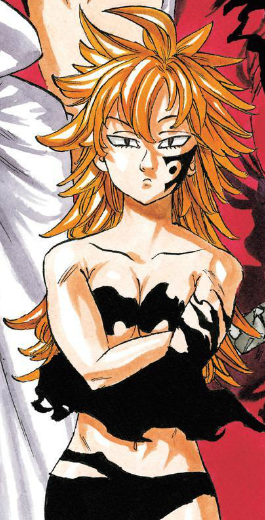Дерриер 「デリエリ Derieri」- элитный воин Клана Демонов, подчиняющейся непосредственно Королю Демонов. Является членом Десяти заповедей. Владела заповедью "Целомудрие".
Дерриер - невысокая и стройная девушка, имеющая развитую мускулатуру и длинные, рыжие волосы с причёской, похожей на таковую у Мелиодаса и Эстароссы. Она не носит одежды, но скрывает интимные места при помощи Тёмной Материи. Её метка заповеди расположена на левой щеке.
Фандом страница Дерриеры здесь
Монспиет
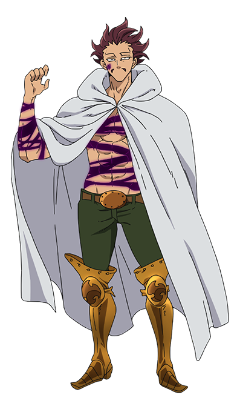Монспиет「モンスピート Monsupīto」- Демон, участник Десяти Заповедей и бывший носитель Заповеди Безмолвия.
Монспиет - высокий, мускулистый демон с растрёпанными бордовыми волосами и французскими усами.
Носит белый плащ с капюшоном, зелёные штаны, опоясанные коричневым ремнём с овальной медной пряжкой, и бронзовые латные сапоги.
Его метка заповеди была расположена на правой щеке.
Фандом страница Монсипиета здесь
Грейроад
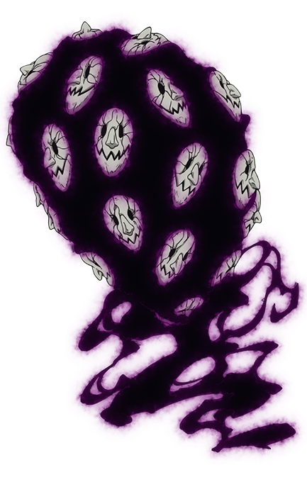Грейроад「グレイロード Gureirōdo」- Демон, участник "Десяти Заповедей" и бывший носитель Заповеди Миролюбие.
Грейроад - мутировавший Серый Демон с множеством лиц и покрытым Тёмной Материей телом, состоящим из множества малых Серых Демонов.
Фандом страница Грейроада здесь
Галан
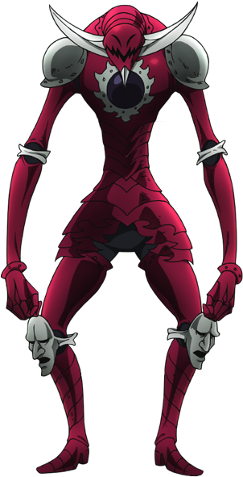Галан「ガラン Garan」- Демон, участник Десяти Заповедей и бывший носитель Заповеди Правды.
Галан - очень высокий и тощий демон с зелёными глазами и телом, похожим на рыцарскую броню, на груди у которой расположен камень, а на шлеме рога и острый подбородок.
Фандом страница Галана здесь
Глоксиния
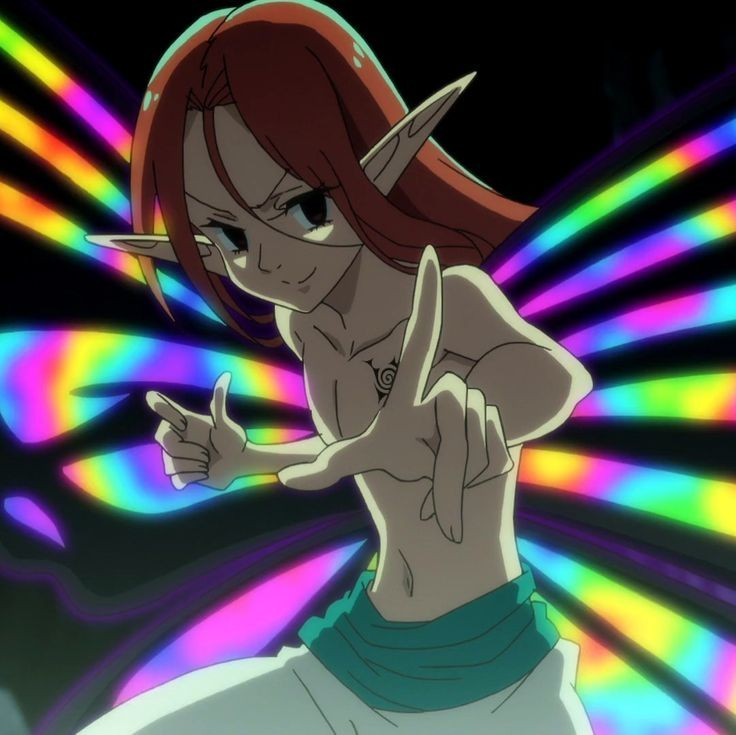Глоксиния「グロキシニア Gurokishinia」- был элитным воином клана демонов, подчиняющегося непосредственно Королю Демонов. Являлся членом Десяти Заповедей, но потом снова вернулся к Клану Фей. Его заповедь называется Покой.
Внешне похож на молодого женоподобного фея. При первом появлении Глоксиния был окутан щупальцами, которые являются одной из форм Васкеза. Вне щупалец у него видны большие крылья, как у бабочки, которые больше чем он сам.
Фандом страница Глоксинии здесь
Дролл
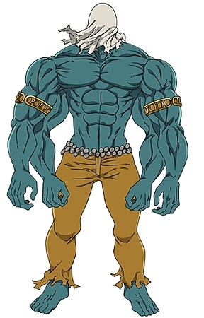Дролл「ドロール Dorōru」 - был элитным воином клана демонов, подчиняющейся непосредственно Королю Демонов. Люди также называют его Балором. До присоединения к Десяти Заповедям был Королём Клана Великанов, а также создателем танца, который позволяет укрепить связь с природой и, скорее всего, увеличивает уровень сил. Его заповедь была Терпение. После того как Дролл решил отдать заповедь Зелдрису, он вернулся в Клан Великанов.
Дролл является очень большим великаном, даже по меркам других великанов (выше Дианы и Матроны). У него синяя кожа и 4 руки, из-за чего в детстве подвергся дискриминации со стороны других великанов .
Фандом страница Дролла здесь
И на последок бывший глава 10 заповедей Мелиодас (сейчас состоит в 7 смертный грехах)
Мелиодас
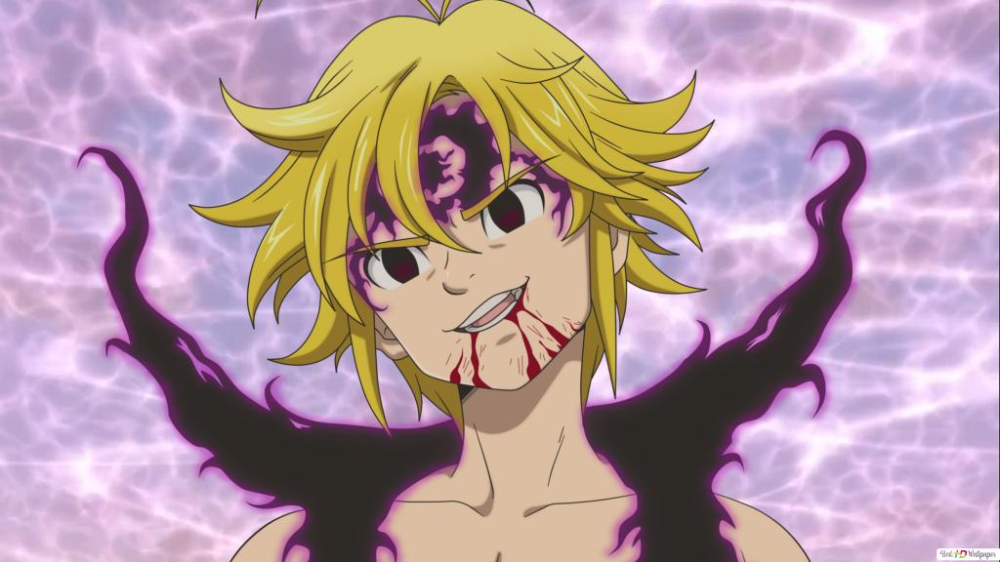Мелиодас「メリオダス Meriodasu」— капитан Семи Смертных Грехов, известный как "Грех Дракона - Гнев". Хозяин известного бара Шляпа Кабана и главный герой всего сюжета. Его священная реликвия — Демонический меч Лоствейн. Основная способность Мелиодаса — Полное отражение. Во время Арки Великого Бойцовского Фестиваля выясняется, что Мелиодас бывший лидер Десяти Заповедей.
Несмотря на внешность ребенка, Мелиодас гораздо старше – ему больше трех тысяч лет. По сравнению с другими персонажами он невелик ростом, у него беспорядочные светлые волосы и изумрудно-зеленые глаза.
Фандом страница Мелиодаса здесь